Installing R and RStudio
Portable environment ¶
This page will guide you on installing R and RStudio in a portable environment on a Windows 10 system. Following are the reasons why I prefer a portable installation over a regular installation:
- I am not tied up to a particular computer. Installation and files reside in a portable drive (a pen-drive or a portable hard disk drive). I can use R on any Windows system wherever I go.
- If this system crashes, I don't lose my setup or files.
- I like experimenting.
If you prefer a regular installation, visit RStudio and follow the steps.
Installing PortablaApps platform (optional): Portable Apps platforms comes with it's own start menu launcher which is handly when you install multiple portable programs in future. Download and install PortableApps Platform from https://portableapps.com/download.
1. Select "New Install" 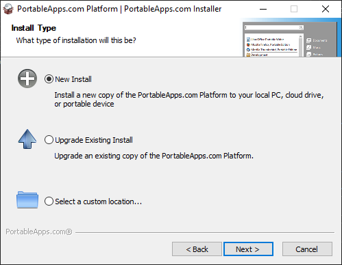
2. Select
- Portable apps if you want to install it on your pen-drive or a portable hard disk drive
- Cloud, if you want to intall it in your Dropbox, Google Drive, PCloud, One Drive, etc
- Local - It will be installed in your local drive but only you can access the programs. Other Windows users on your system will not be able to access your portable applications. This is where I am installing.
- Local All Users - It will be installed in your local drive and all users on your computer can access them. 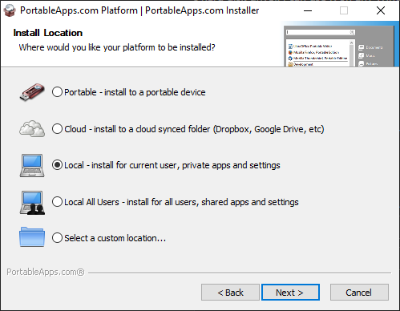
3. Select your preferred directory and continue. 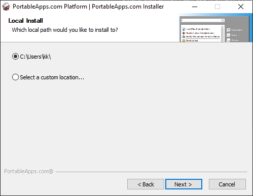
Once the installation is complete, open Portable Apps platform and if everthing went well, you'll see something like this. 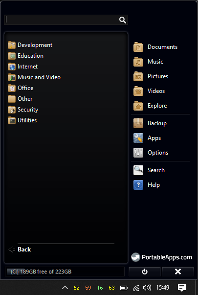
[^top]
Installing R ¶
1. Download R Portable paf.exe file from https://sourceforge.net/projects/rportable/.
2. Open PortableApps Menu and go to Apps > Install a New App 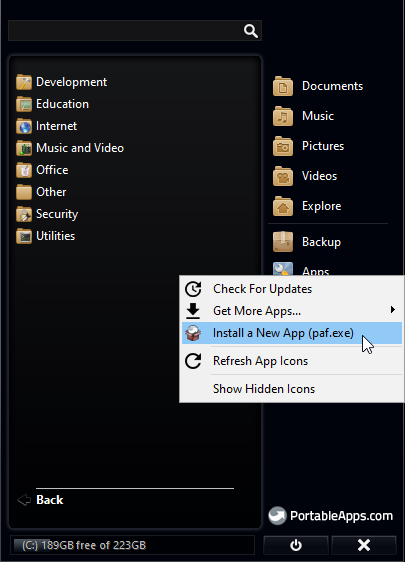
3. Select the R Portable paf.exe file you downloaded earlier and continue installation with default settings.
4. Once installation is complete, you will be able to see R in your Portable Apps menu. Click on it and open R console. 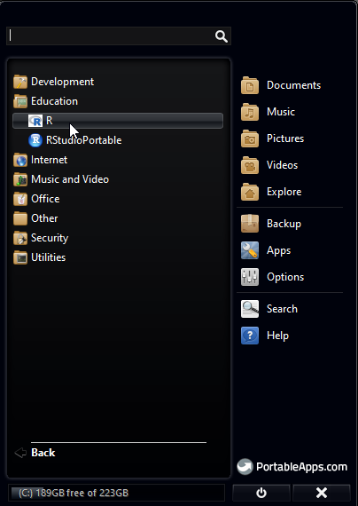
5. Updating R packages: In R Console menu, go to Packages > Update Packages 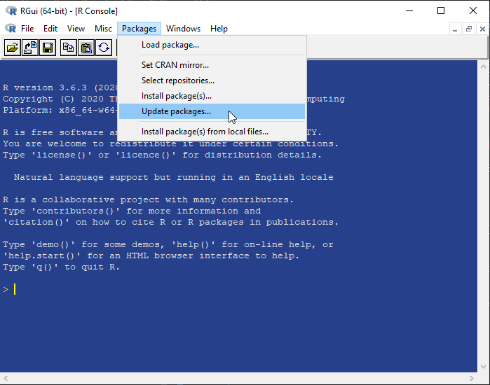
6. Select the CRAN mirror location nearest to you. 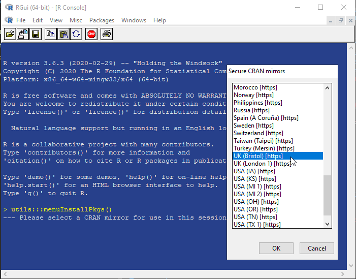
7. If there are any packages that need to be updated, you'll see a small window with a list of apps selected. Click 'OK' and update them.
8. Close R console. There is no need to save the workspace image. 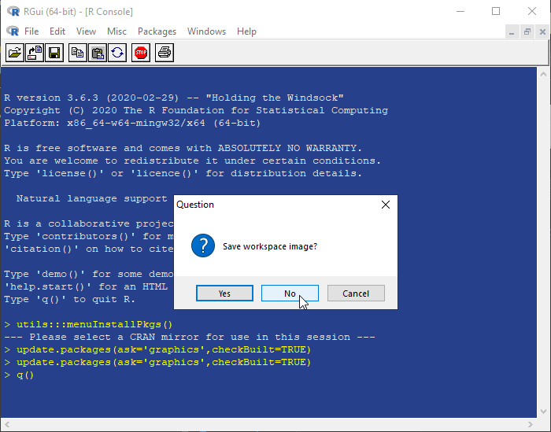
[^top]
Installing RStudio ¶
1. Go to https://sourceforge.net/projects/rportable/files/R-Studio/ and select the latest version of RStudio. Download the paf.exe file from the folder.
2. Open PortableApps Menu and go to Apps > Install a New App
3. Select the RStudio Portable paf.exe file you downloaded earlier and continue installation with default settings.
4. Once installation is complete, you will be able to see RStudioPortable in your Portable Apps menu. Click on it and open R Studio.
5. The first time you open R Studio, it will ask you to chose the version of R you want to use. 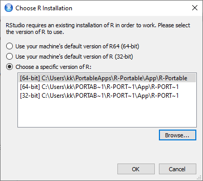
6. Click "Browse" and point to the "bin" directory of portable R you installed earlier. The path looks similar to C:\Users\YourUserName\PortableApps\R-Portable\App\R-Portable\bin.
7. Select 32-bit or 64-bit based on your Windows 10 version. If you are unsure, select 32-bit as it works on both.
You are now ready to use R Studio. 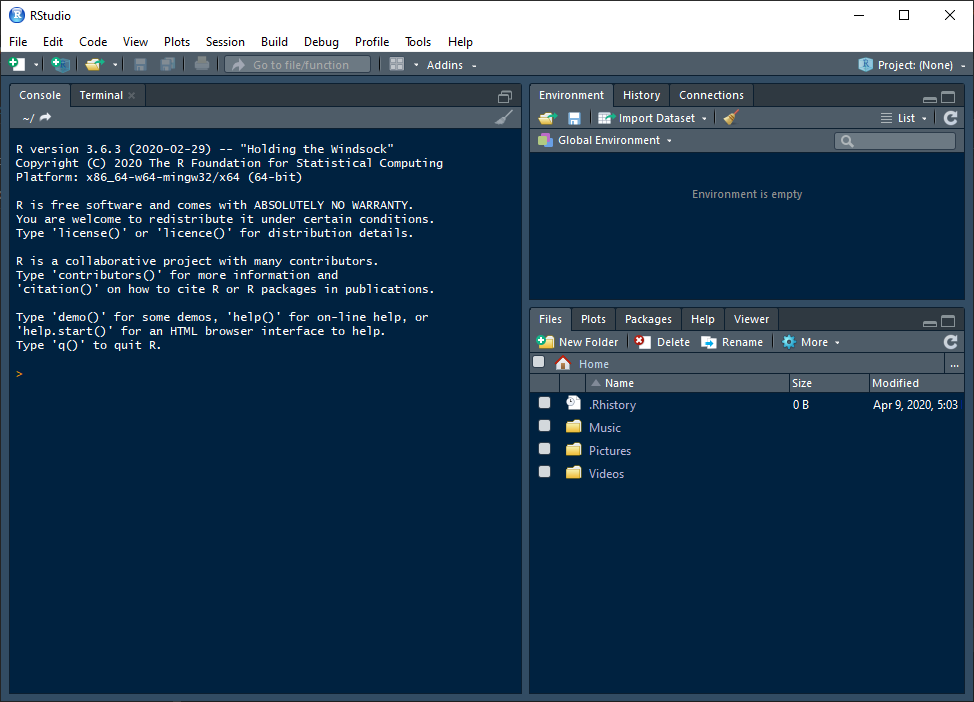
[^top]
Comments